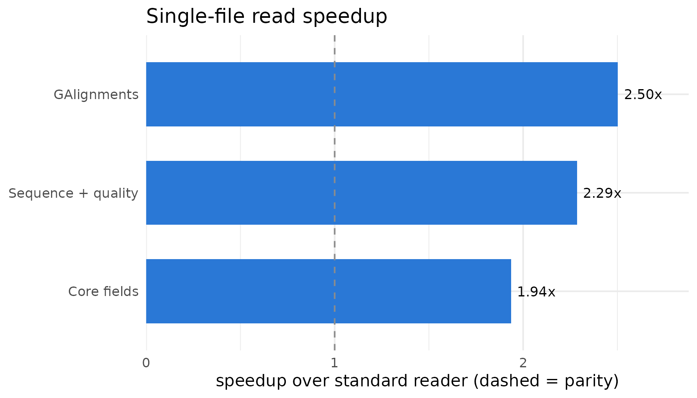
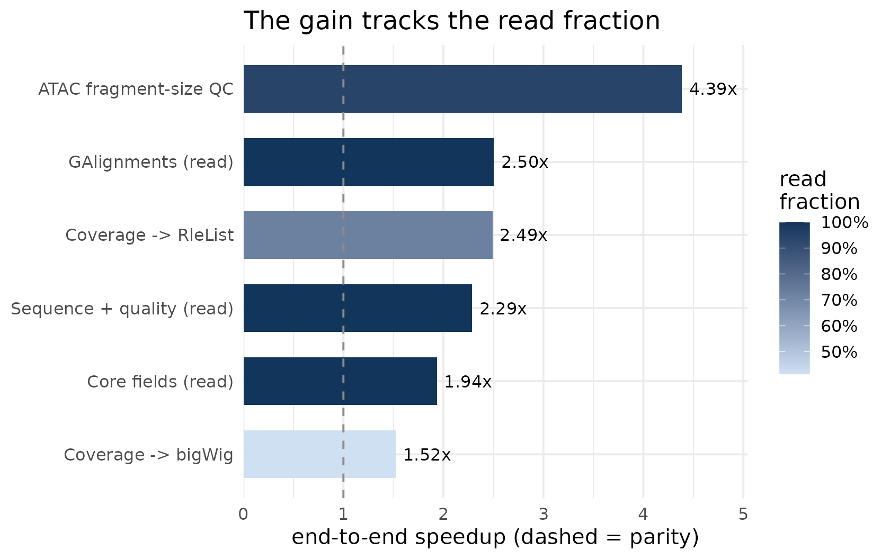

Benchmarking BamScaleR: reader throughput and end-to-end workflow impact
Source:vignettes/benchmark-results.Rmd
benchmark-results.RmdOverview
BamScaleR is a multithreaded BAM reader, built on the
ompBAM OpenMP engine, that returns the same native
Bioconductor objects as the standard readers, so it can take the place
of Rsamtools::scanBam and
GenomicAlignments::readGAlignments in existing analyses
(see ?bam_read for the differences).
Reading a BAM is only one step of an analysis, so a faster reader speeds a workflow end-to-end only in proportion to the time that workflow spends reading (Amdahl’s law). This vignette summarises benchmarks that quantify both the raw read speedup and its end-to-end effect on two standard workflows — coverage/bigWig track generation and ATAC-seq fragment-size QC — with BamScaleR output verified identical to that of the standard tools.
The numbers below are a concise summary of a representative benchmark
run (a deeply sequenced public ENCODE ATAC-seq BAM, ENCFF191LNL,
151,057,932 alignments; Intel Xeon Gold 6252, 96 logical cores; warm
page cache; median of 5 iterations). They are computed, when this
vignette is built, from summary tables shipped with the package (see Data provenance). The benchmark harness that
produces them is in inst/benchmarks/
(run_server_benchmark.R,
run_workflow_benchmark.R); see the last section to
reproduce the full results.
Read throughput on a single large BAM
On a single large BAM, BamScaleR reads 1.9–2.5x faster than the standard reader across three representative access patterns, because it spreads the BGZF decode across cores and assembles the output objects in native code:
| Workload | Reads | Standard (s) | BamScaleR (s) | Threads | Speedup |
|---|---|---|---|---|---|
| Core fields | qname/flag/rname/pos/mapq/cigar | 263.3 | 136.0 | 36 | 1.94x |
| GAlignments | -> GAlignments object | 290.1 | 115.9 | 72 | 2.50x |
| Sequence + quality | seq + base quality | 409.8 | 179.3 | 24 | 2.29x |

Two points. At one thread BamScaleR is 1.0–1.3x as
fast as the single-threaded readers (from native-code object assembly);
most of the win comes from threading, and the scaling is
strongly sublinear: going from 1 to 48 threads speeds
BamScaleR itself up by 1.6–1.9x, and no thread count beyond 24 is more
than 10.2% faster than 24 threads. The value is not near-linear scaling
but the ability to use cores that a single-threaded reader cannot use at
all – as on one large BAM in an interactive session. Object-free
command-line decoders such as samtools reach several-fold
higher raw throughput, but return no Bioconductor object;
BamScaleR’s role is fast, object-faithful decoding inside
R.
End-to-end impact tracks the read fraction
Embedding BamScaleR as the read step of a complete workflow, the end-to-end speedup follows how read-dominated that workflow is (Amdahl’s law):
| Endpoint | Layer | Read fraction | Speedup |
|---|---|---|---|
| ATAC fragment-size QC | workflow | 94% | 4.39x |
| GAlignments (read) | read | 100% | 2.50x |
| Coverage -> RleList | workflow | 72% | 2.49x |
| Sequence + quality (read) | read | 100% | 2.29x |
| Core fields (read) | read | 100% | 1.94x |
| Coverage -> bigWig | workflow | 41% | 1.52x |

- ATAC fragment-size QC is nearly pure read, so BamScaleR’s read speedup carries through almost intact: 4.39x end-to-end.
-
Coverage -> bigWig is dominated by the shared,
single-threaded
rtracklayer::export.bwstep (identical work on both arms), so the end-to-end gain is bounded at 1.52x even though the read phase itself is 5.9x faster. Stopping at the in-memory coverageRleList– what many analyses consume next – recovers a 2.49x gain. (bam_coverage()andbam_coverage_bigwig()compute these endpoints directly inside the reader, removing the R-side read phase entirely; see the function documentation.)
A note on cores and fairness
A multithreaded reader can occupy cores a single-threaded one cannot. At matched core counts (both arms given the same number of cores) the two readers are within about 20% of each other for multi-file processing (coverage ~1.20x, ATAC ~0.97x): the single-threaded reader already saturates a machine by parallelising across files, so BamScaleR’s multi-file advantage comes specifically from also threading within a file – which pays off when there are fewer files than cores.
Beyond reading: in-reader aggregation
For workflows whose endpoint is a summary rather than the alignments
themselves, BamScaleR provides four functions that fold the computation
inside the multithreaded reader, so no per-read R objects are ever
materialised: fragment_sizes() (paired-end fragment-size
distribution), mapq_dist() (mapping-quality distribution),
bam_coverage() (per-base coverage RleList),
and bam_coverage_bigwig() (single-pass BAM to bigWig with
parallel block compression). The first three are tested
identical() to table(abs(scanBam(isize))),
table(scanBam(mapq)) and
coverage(readGAlignments()); the bigWig, read back with
rtracklayer, has the same values as
bam_coverage(), and its parallel compression gives a file
byte-identical to the package’s own serial writer. These remove the
R-side read phase from the Amdahl decomposition above; their benchmarks
are not part of the data shipped with this vignette.
Output is identical to the standard tools
Before the timings, the outputs were checked against the standard
tools. On the full files, at one thread, the coverage
RleList was identical() to
GenomicAlignments::coverage() on
readGAlignments output, and the ATAC fragment-size table
was identical() to the one from
Rsamtools::scanBam and to
ATACseqQC::fragSizeDist over all 151,057,932 alignments;
the read-pattern outputs were checked on a 1-kb window
(benchmark_correctness.csv). The package’s unit tests
compare coverage with coverage(readGAlignments()) and the
fragment-size and MAPQ tables with scanBam() on the example
BAM at 1, 2 and 4 threads.
Try it
library(BamScaleR)
bam <- ompBAM::example_BAM("Unsorted")
## Alignment fields as a GAlignments object (as from readGAlignments)
ga <- bam_read(bam, what = c("rname", "pos", "cigar", "strand"),
as = "GAlignments", threads = 2)
ga## GAlignments object with 10000 alignments and 0 metadata columns:
## seqnames strand cigar qwidth start end
## <Rle> <Rle> <character> <integer> <integer> <integer>
## [1] 19 + 1S88M6798N61M 150 572614 579560
## [2] 19 - 1S148M1S 150 579499 579646
## [3] 6 + 60S86M4S 150 44252112 44252197
## [4] 6 - 1S146M3S 150 44252124 44252269
## [5] 12 + 1S149M 150 46185884 46186032
## ... ... ... ... ... ... ...
## [9996] 2 - 16S122M12S 150 186680457 186680578
## [9997] 15 + 4S143M3S 150 90501177 90501319
## [9998] 15 - 26M2I56M66S 150 90501301 90501382
## [9999] 4 + 3M336N95M752N51M1S 150 121801488 121802724
## [10000] 4 - 1S117M121N32M 150 121802677 121802946
## width njunc
## <integer> <integer>
## [1] 6947 1
## [2] 148 0
## [3] 86 0
## [4] 146 0
## [5] 149 0
## ... ... ...
## [9996] 122 0
## [9997] 143 0
## [9998] 82 0
## [9999] 1237 2
## [10000] 270 1
## -------
## seqinfo: 25 sequences from an unspecified genome
## ...or core fields as a data.frame; `threads` controls within-file parallelism
df <- bam_read(bam, what = c("qname", "flag", "mapq"),
as = "data.frame", threads = 2)
head(df)## qname flag mapq
## 1 ST-E00600:137:H77Y3CCXY:1:1101:6837:1309 163 255
## 2 ST-E00600:137:H77Y3CCXY:1:1101:6837:1309 83 255
## 3 ST-E00600:137:H77Y3CCXY:1:1101:10450:1309 163 255
## 4 ST-E00600:137:H77Y3CCXY:1:1101:10450:1309 83 255
## 5 ST-E00600:137:H77Y3CCXY:1:1101:15077:1309 99 255
## 6 ST-E00600:137:H77Y3CCXY:1:1101:15077:1309 147 255Data provenance
Every result in this vignette is computed, when the vignette is
built, from four small CSV files shipped with the package in
inst/extdata/:
## Benchmark summary tables shipped with the package (see "Data provenance").
extdata <- function(f) {
system.file("extdata", f, package = "BamScaleR", mustWork = TRUE)
}
bench <- read.csv(extdata("benchmark_summary.csv"))
manifest <- read.csv(extdata("benchmark_encode_manifest.csv"))
checks <- read.csv(extdata("benchmark_correctness.csv"))
run_info <- read.csv(extdata("benchmark_run_info.csv"))
info <- setNames(run_info$value, run_info$field)-
benchmark_summary.csv: one row per benchmarked configuration (54 rows): median wall-clock time and, for the single-file workflows, the median read, compute and write phases. -
benchmark_encode_manifest.csv: the 25 public ENCODE ATAC-seq alignment BAMs (accession, experiment, biosample, size, md5 checksum, read count and download URL). -
benchmark_run_info.csv: host, software versions and git commit of the run. -
benchmark_correctness.csv: the output-equivalence checks the timings were gated on.
They are a subset of the result tables of benchmark run
final_20261008 (started 2026-10-08; BamScaleR 0.99.1 at git commit
30f6194; R 4.6.1; Intel Xeon Gold 6252, 96 logical cores), produced by
the harness in inst/benchmarks/ and reduced to these files
by inst/scripts/make_benchmark_extdata.R. The header of
that script records the exact command line of every step: corpus
selection from the ENCODE portal (select_encode_atac.R),
md5-verified download (download_atac_data.R), the
read-pattern and workflow benchmarks
(run_server_benchmark.R,
run_workflow_benchmark.R), and merging of the staged runs
(merge_runs.R).
The summary numbers are derived as follows:
- Read patterns compare the single-threaded standard reader with BamScaleR’s fastest configuration over a sweep of 1, 2, 4, 8, 12, 24, 36, 48, 72 OpenMP threads, on the same file, both returning the same object.
- Workflows take, for each arm, the configuration with the lowest median end-to-end time. An endpoint’s time is the sum of its median phases (read + compute, plus the track write for the bigWig endpoint), and its read fraction is the standard pipeline’s read time divided by that sum.
- Matched cores divide the standard arm’s median time by BamScaleR’s on the 24-file cohort, with both arms running one thread per file on the same number of cores.
| Role | Accession | Experiment | Biosample | Reads (M) | Size (GB) |
|---|---|---|---|---|---|
| single | ENCFF191LNL | ENCSR040DJK | psoas muscle | 151.1 | 7.34 |
| multi | ENCFF590EOC | ENCSR904UKR | dendritic cell | 107.7 | 4.50 |
| multi | ENCFF919PWF | ENCSR608KJD | HG03097 | 77.8 | 4.50 |
| multi | ENCFF988EGP | ENCSR762YFD | GM18520 | 66.1 | 4.48 |
| multi | ENCFF512LHW | ENCSR641KNU | GM21825 | 78.8 | 4.46 |
| multi | ENCFF403LDD | ENCSR954BDA | GM21529 | 83.6 | 4.43 |
| multi | ENCFF342KIA | ENCSR231BZU | GM19351 | 86.3 | 4.41 |
| multi | ENCFF130DND | ENCSR858GTE | HG03442 | 82.3 | 4.41 |
| multi | ENCFF205LVV | ENCSR373TDL | right lobe of liver | 79.5 | 4.36 |
| multi | ENCFF603MOL | ENCSR312UCH | GM18519 | 65.3 | 4.33 |
| multi | ENCFF588QWF | ENCSR554WGQ | HG03280 | 78.0 | 4.32 |
| multi | ENCFF704VYQ | ENCSR848TMJ | heart left ventricle | 87.6 | 4.30 |
| multi | ENCFF930RKA | ENCSR584AXZ | coronary artery | 74.6 | 4.27 |
| multi | ENCFF397GZQ | ENCSR831KAH | tibial nerve | 74.5 | 4.26 |
| multi | ENCFF321SNO | ENCSR404OEO | HG02763 | 78.0 | 4.26 |
| multi | ENCFF751SRZ | ENCSR902CFR | GM21423 | 77.9 | 4.25 |
| multi | ENCFF423JSR | ENCSR210NKB | testis | 71.9 | 4.23 |
| multi | ENCFF204XQS | ENCSR084FHK | GM18505 | 71.1 | 4.22 |
| multi | ENCFF524VNU | ENCSR237VSF | dendritic cell | 105.5 | 4.20 |
| multi | ENCFF199OKA | ENCSR065CER | motor neuron | 105.3 | 4.20 |
| multi | ENCFF825QCZ | ENCSR115OIV | activated T-helper 17 cell | 85.5 | 4.17 |
| multi | ENCFF978QLZ | ENCSR368FYV | HG02852 | 79.5 | 4.17 |
| multi | ENCFF275GRM | ENCSR131HOY | motor neuron | 96.5 | 4.16 |
| multi | ENCFF373DIW | ENCSR024WOD | GM21390 | 73.0 | 4.13 |
| multi | ENCFF557GPJ | ENCSR122NDR | GM21576 | 75.3 | 4.13 |
Reproducing the full benchmarks
The complete benchmark harness ships under
inst/benchmarks/; its README.md lists the
additional packages and command-line tools it needs.
dir(system.file("benchmarks", package = "BamScaleR"))
# select_encode_atac.R : select the ATAC-seq corpus from the ENCODE portal
# download_atac_data.R : fetch, md5-verify and index the selected BAMs
# run_server_benchmark.R : read-pattern micro-benchmarks (step1 / GAlignments / seq+qual)
# run_workflow_benchmark.R : end-to-end coverage and ATAC fragment-size QC workflows
# merge_runs.R : merge staged runs into one result directory
## Reduce a finished run to the CSVs this vignette reads
system.file("scripts", "make_benchmark_extdata.R", package = "BamScaleR")Each benchmark writes machine-readable result tables
(summary.csv) plus host and correctness metadata;
make_benchmark_extdata.R extracts from them the files in
inst/extdata/ from which the summary figures above are
derived.
Session information
## R version 4.6.2 (2026-10-29)
## Platform: x86_64-pc-linux-gnu
## Running under: Ubuntu 26.04.1 LTS
##
## Matrix products: default
## BLAS: /usr/lib/x86_64-linux-gnu/openblas-pthread/libblas.so.3
## LAPACK: /usr/lib/x86_64-linux-gnu/openblas-pthread/libopenblasp-r0.3.32.so; LAPACK version 3.12.0
##
## locale:
## [1] LC_CTYPE=C.UTF-8 LC_NUMERIC=C LC_TIME=C.UTF-8
## [4] LC_COLLATE=C.UTF-8 LC_MONETARY=C.UTF-8 LC_MESSAGES=C.UTF-8
## [7] LC_PAPER=C.UTF-8 LC_NAME=C LC_ADDRESS=C
## [10] LC_TELEPHONE=C LC_MEASUREMENT=C.UTF-8 LC_IDENTIFICATION=C
##
## time zone: UTC
## tzcode source: system (glibc)
##
## attached base packages:
## [1] stats graphics grDevices utils datasets methods base
##
## other attached packages:
## [1] BamScaleR_0.99.3 ggplot2_4.0.4 BiocStyle_2.40.0
##
## loaded via a namespace (and not attached):
## [1] sass_0.5.0 generics_0.1.4
## [3] bitops_1.1-0 SparseArray_1.12.3
## [5] lattice_0.23-1 digest_0.6.39
## [7] evaluate_1.0.5 grid_4.6.2
## [9] RColorBrewer_1.1-3 bookdown_0.48
## [11] fastmap_1.2.0 Matrix_1.7-6
## [13] jsonlite_2.0.0 cigarillo_1.2.1
## [15] GenomeInfoDb_1.48.0 BiocManager_1.30.27
## [17] httr_1.4.9 UCSC.utils_1.8.0
## [19] scales_1.4.0 Biostrings_2.80.2
## [21] codetools_0.2-20 textshaping_1.1.0
## [23] jquerylib_0.1.4 abind_1.4-8
## [25] cli_3.6.6 rlang_1.3.0
## [27] crayon_1.5.3 XVector_0.52.0
## [29] ompBAM_1.16.0 Biobase_2.72.0
## [31] DelayedArray_0.38.2 withr_3.0.3
## [33] cachem_1.1.0 yaml_2.3.12
## [35] otel_0.3.0 S4Arrays_1.12.1
## [37] tools_4.6.2 parallel_4.6.2
## [39] BiocParallel_1.46.0 Rsamtools_2.28.0
## [41] SummarizedExperiment_1.42.0 BiocGenerics_0.58.1
## [43] vctrs_0.7.3 R6_2.6.1
## [45] matrixStats_1.5.0 stats4_4.6.2
## [47] lifecycle_1.0.5 Seqinfo_1.2.0
## [49] S4Vectors_0.50.3 fs_2.1.0
## [51] IRanges_2.46.0 ragg_1.5.2
## [53] desc_1.4.3 pkgdown_2.2.1
## [55] bslib_0.12.0 gtable_0.3.6
## [57] glue_1.8.1 Rcpp_1.1.2
## [59] systemfonts_1.3.4 xfun_0.62
## [61] GenomicAlignments_1.48.0 GenomicRanges_1.64.0
## [63] MatrixGenerics_1.24.0 knitr_1.52
## [65] farver_2.1.2 htmltools_0.5.9
## [67] rmarkdown_2.32 labeling_0.4.3
## [69] compiler_4.6.2 S7_1.0.0